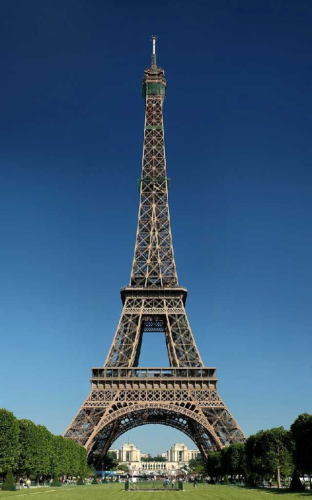
August 1973 La Tour Eiffel Paris
１８８９年に万国博覧会のランドマークとして創られた高さ３２４mのエッフェル塔
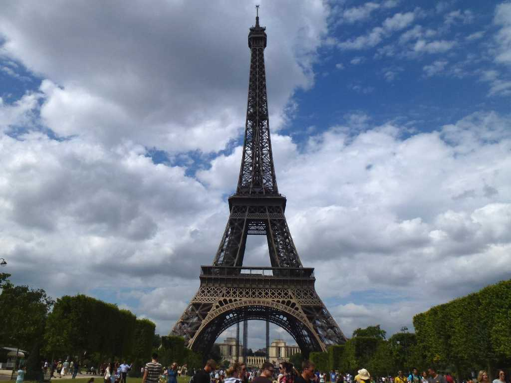
La Tour Eiffel
８０日間世界一周鉄道の旅で４４日目 学生時代以来約４０年ぶりの再訪問
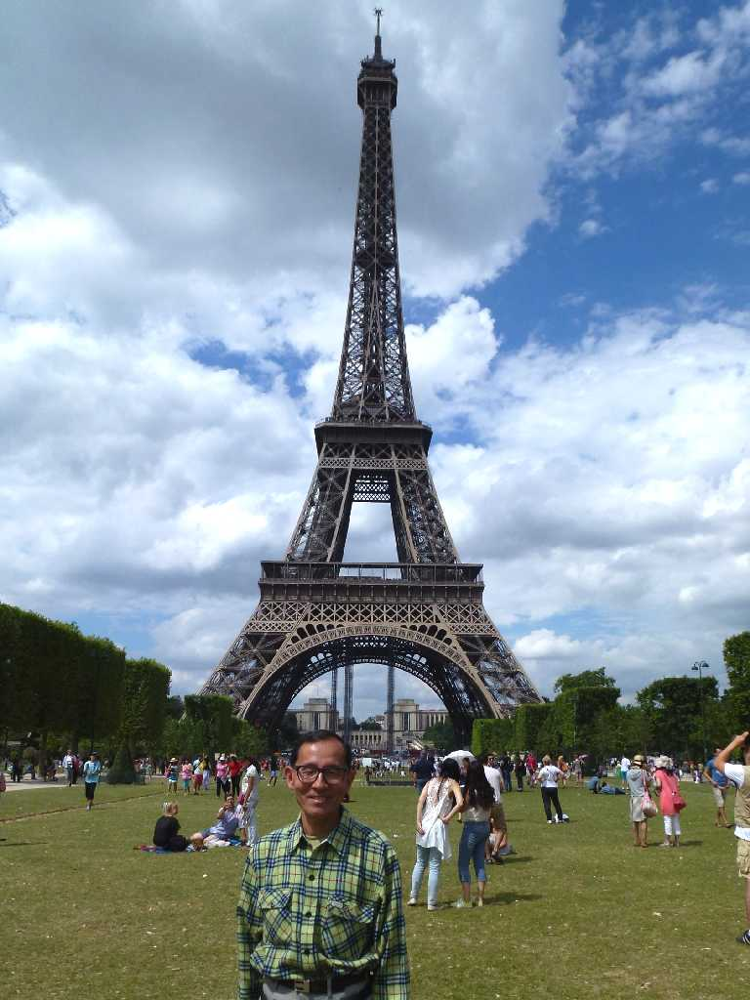
August 6 2013 La Tour Eiffel
夏の観光シーズンで入場チケット売り場がとぐろを巻いて大行列のため昇るのを諦める
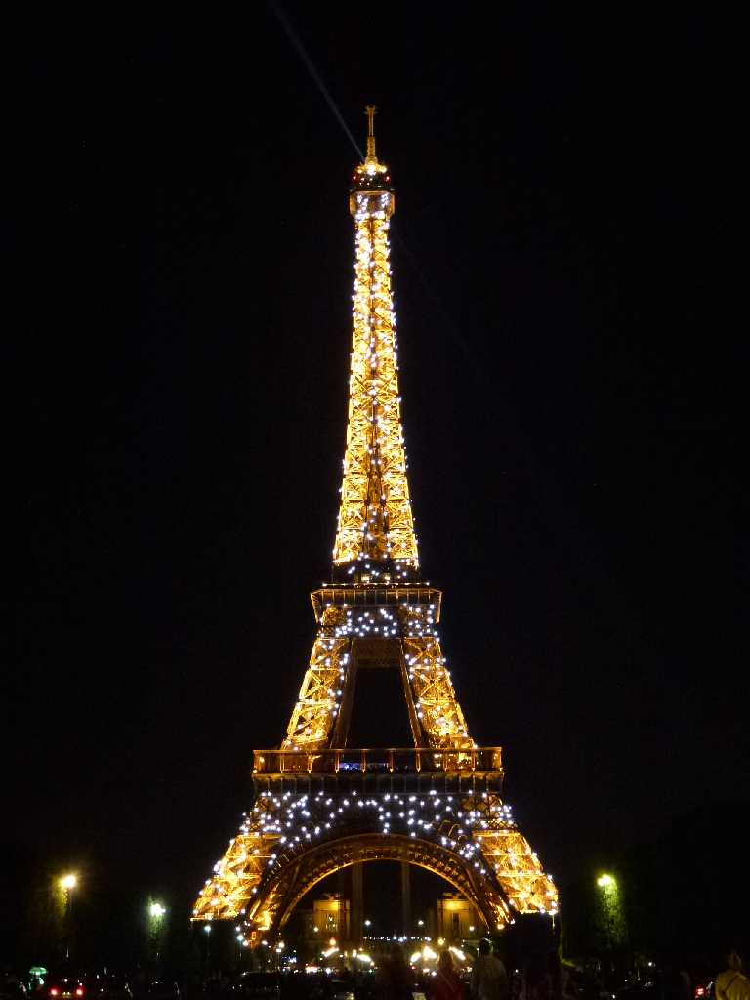
Illumination Night View
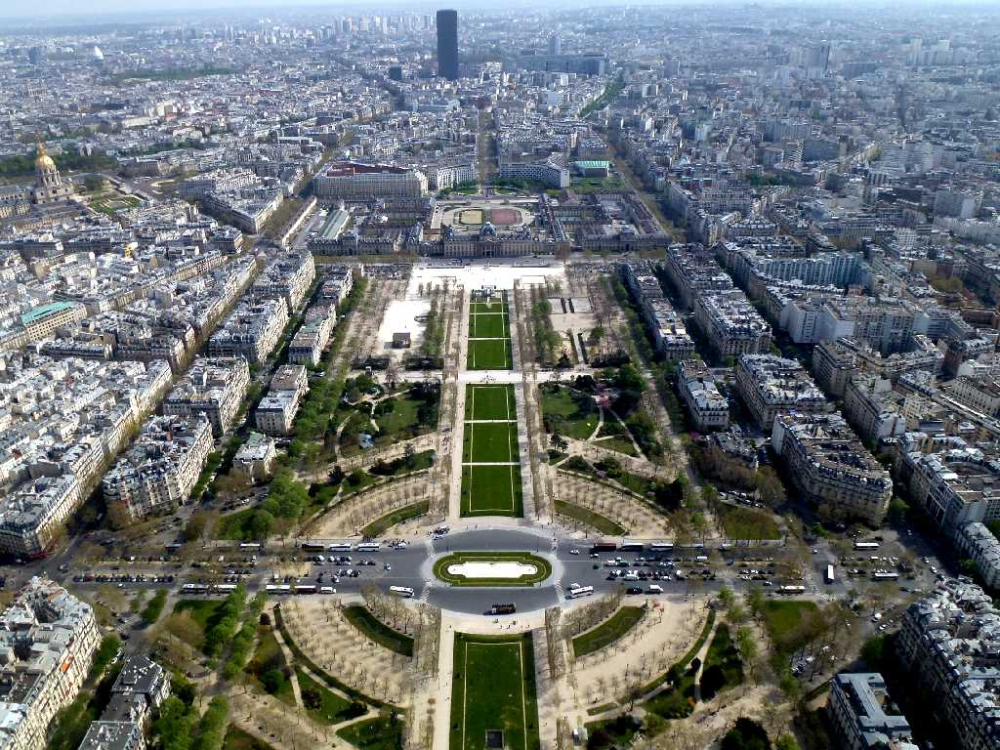
View South East
モロッコ周遊の旅で帰国便のパリ乗り継ぎを利用し８０日間世界一周鉄道の旅以来８ヶ月ぶりにパリのゲストハウスに滞在して観光
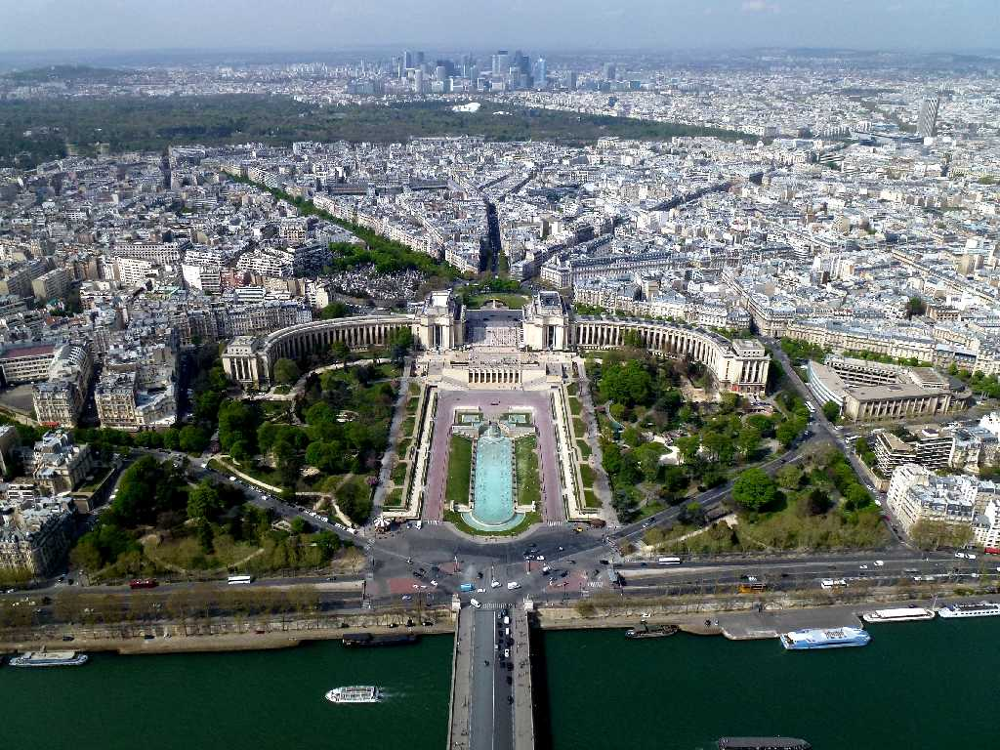
View North West
学生時代も世界一周鉄道の旅も昇れなかった高さ２７６mの第三展望台からパリ市内を望む
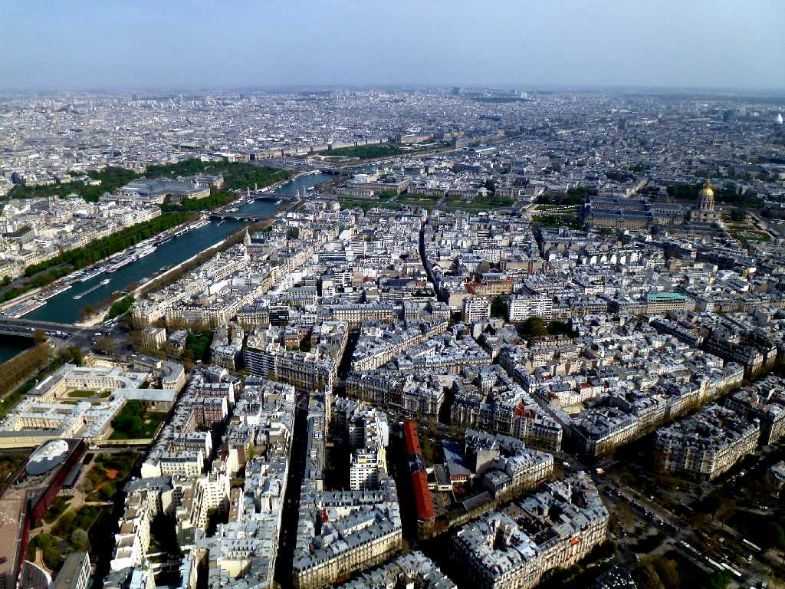
View East
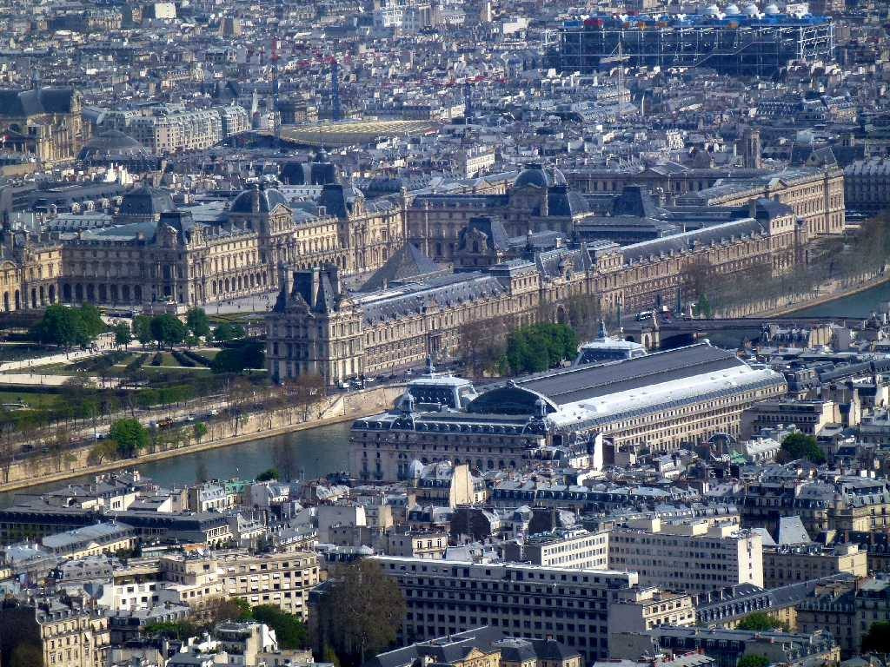
Louvre Orsay
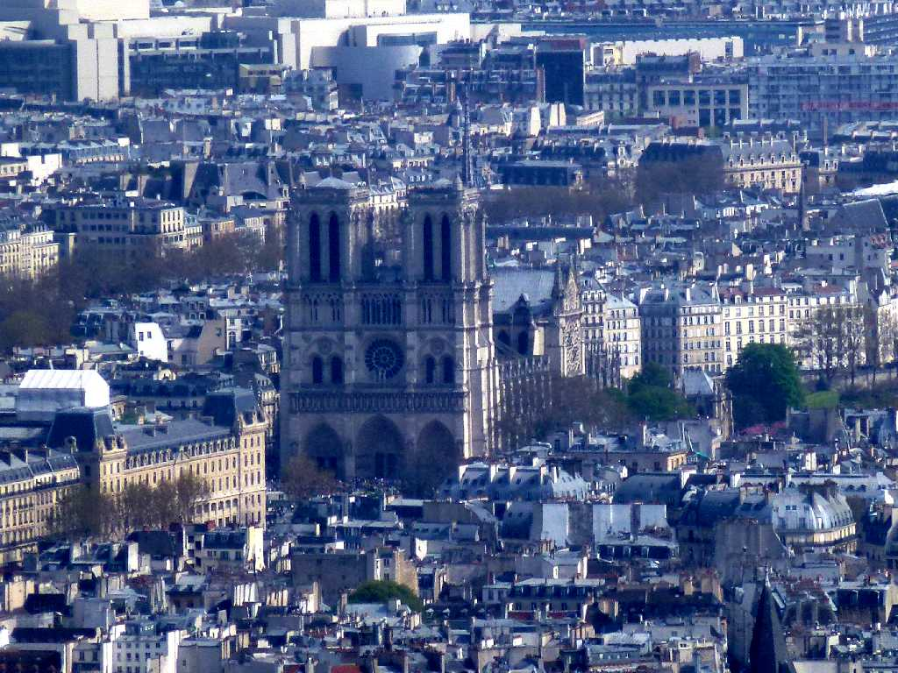
Notre Dame
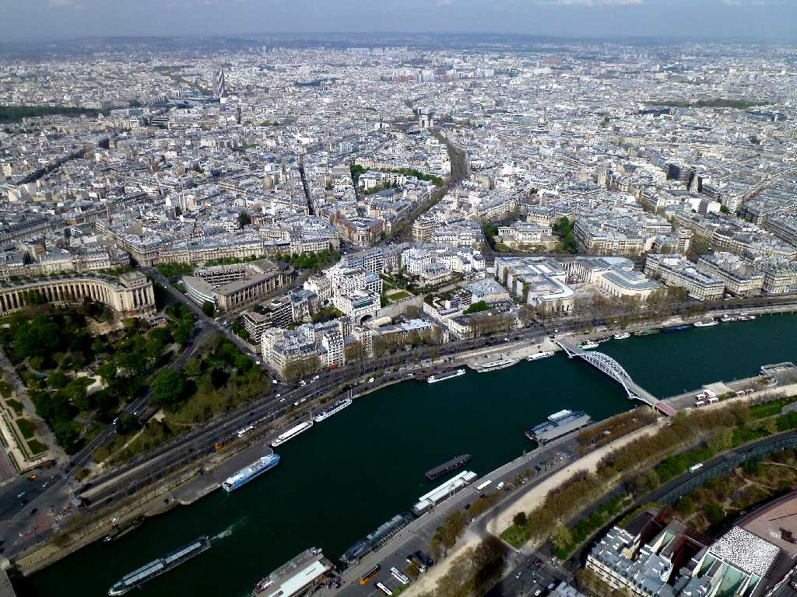
View North
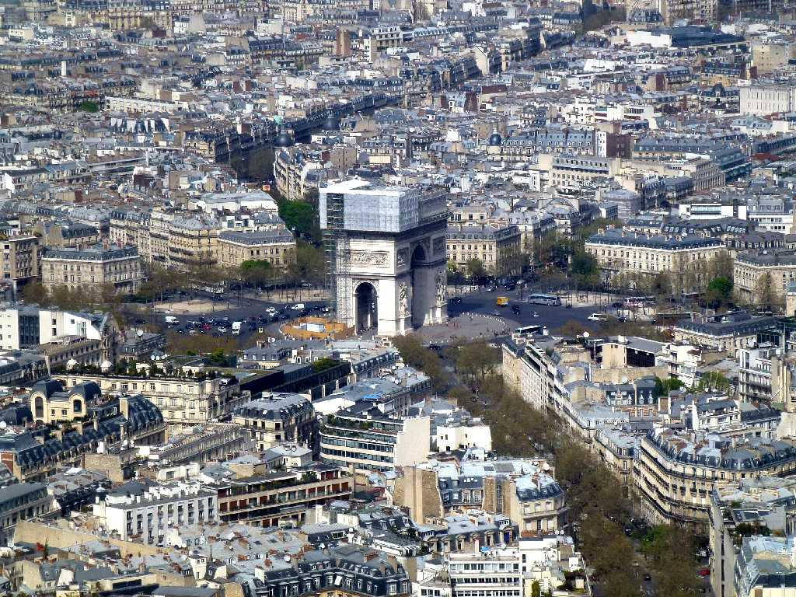
Arc de Triomphe
晴天の日を選んだもののシーズンオフにもかかわらずチケット売り場で１時間並び第一展望台のエレベーターで１時間並び第三展望台のエレベーターで１時間並び疲れましたが降りるのにまた１時間づつ２回並び計５時間の行列待ちは１日観光となってしまいました
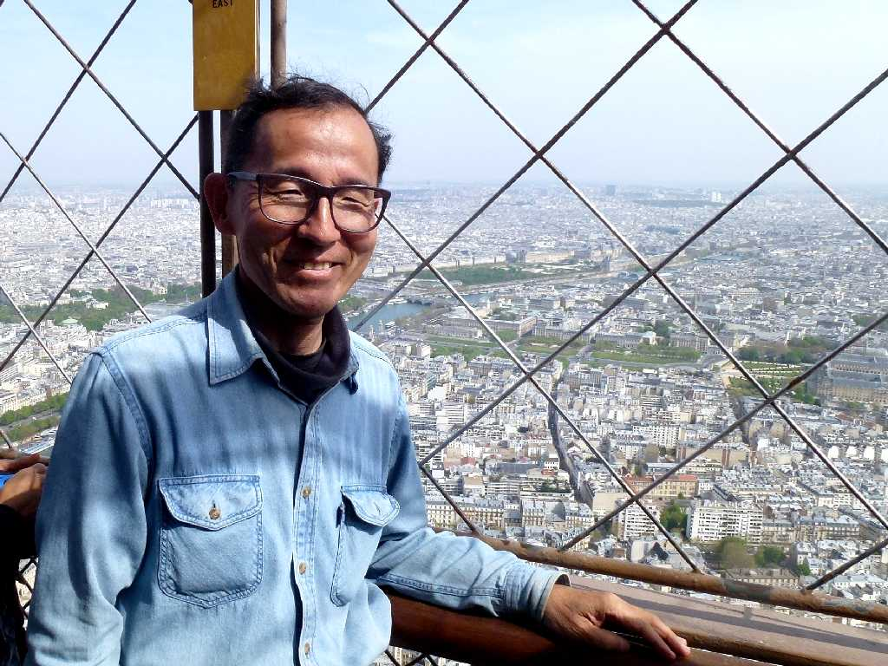
April 1 2014 La Tour Eiffel